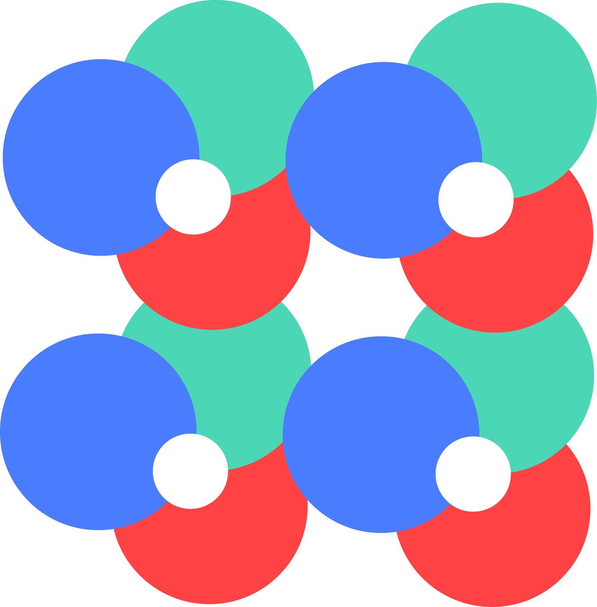

Atomyc is a new kind of framework, for design and development websites and web applications.
Their difference to others is that it are developed with atomic design techniques, based on book of Brand Frost.
Thanks to this kind of development all users can make changes to their web pages and make them look more to their brands. Atomyc makes it easier to design, customization and each page with Atomyc be unique.
Atomic design is a methodology composed of five distinct stages working together to create deliberate interface design systems

